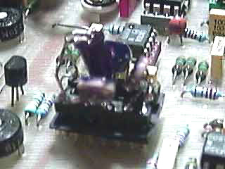
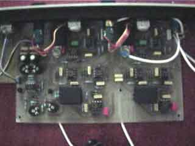
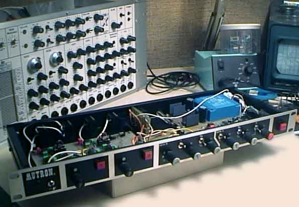

|
The Mutron Biphase is a legendary (bi)-phasor pedal, made
by Musitronic's around 1975/76... It's a 12 stages or 2*6
stages optical phasor and one of the best i have ever heard.
I have repaired many of them. Also one day of 1996, i have
cloned it. I have redrawned schematics from original pcbs
of a vintage Mutron Biphase and assembled the prototype in
a 1U rack.
The clone is an
exact copy of the original for audio part and sweep generators.
The difference is on led modulation drivers, where original
circuits have been replaced by a calibrated CV input
and a scale/offset stage for a larger adjustable range.
Why
did i change LDRs & drivers? Because to find same as vintages ones is almost impossible :3 double LDR + led
, all encapsulated in a little metal can... I have found 6
dual cells in two dead MXR100 guitar pedals. Let's transform
"noisy" MXR100s in a cool Mutron Biphase....I have soldered
3 dual LDRs on a 14 pin dip socket, this way i can test differents
cell+led assembly and compare...It is also possible to use
simple LDR but placing them around the led is more complicated..LDRs+
led must be perfectly isolated from ligth, otherwise
effect is impossible to trim. For aop, originals are RCA4558,
many other dual aops
will work well too (TL072,LM358,etc...). Resistors are 1%
metal on audio path, 5% metal otherwise, capacitor on phase
stages are polypropylen. This is for my clone, but original
Mutrons were builded with carbon 10% resistors and classic
polyester capacitors.This slightly changes the sound color
...
 |
 |
|
Cloned cell unit
with MXR cells
|
Audio pcb of the clone
|
Controls are the
same as the Mutron simply added a pot equivalent to"pedal
pot" on original Biphase ( it was an external pedal unit ).
This pot allow a manual control of phasors, like the
cutoff on a vcf also very slow modulations can be reach using
it. An external CV modulation input for each phasor stage
has been added.

And
sounds ? Fat and musical phasor effect is present
same as the vintage, but with a sligthly larger sensitivity
sweep....Like the original, the noise floor is very low
.
|